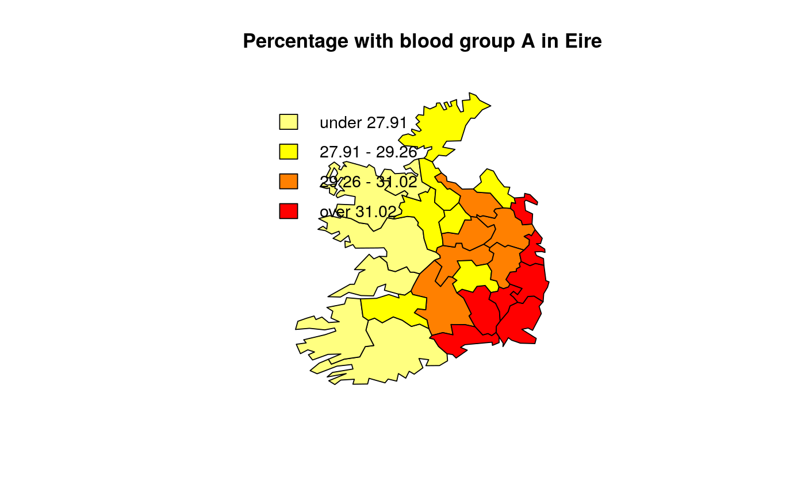
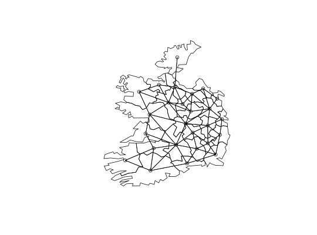
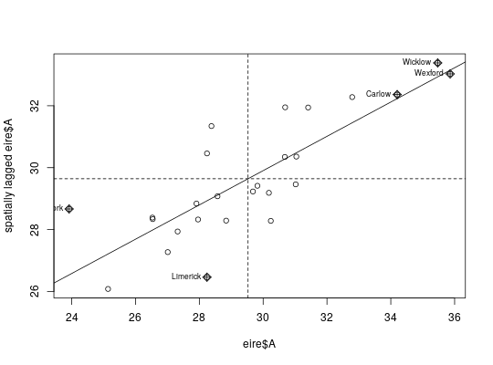
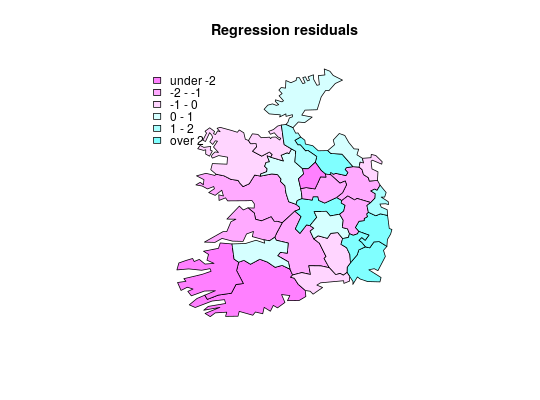
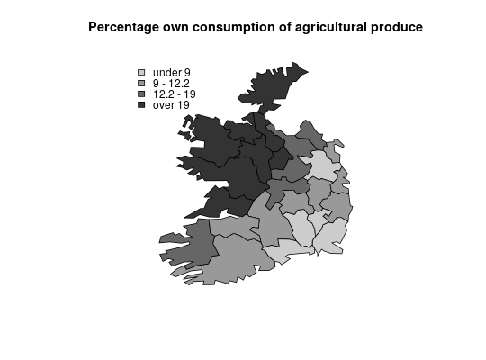
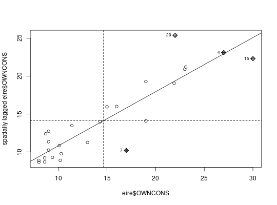
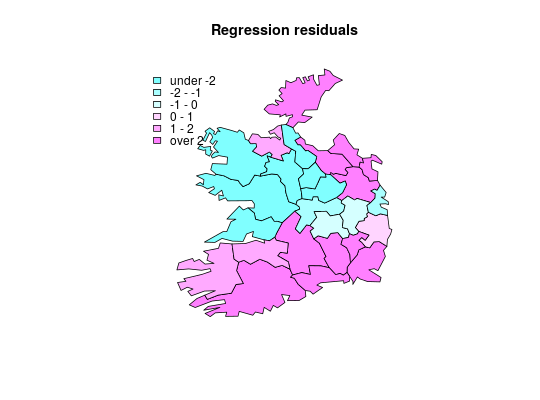

The Eire data set has been converted to shapefile format and placed in the etc/shapes directory. The initial data objects are now stored as a SpatialPolygonsDataFrame object, from which the contiguity neighbour list is recreated. For purposes of record, the original data set is retained.
The eire.df data frame has 26 rows and 9 columns. In addition, polygons of the 26 counties are provided as a multipart polylist in eire.polys.utm (coordinates in km, projection UTM zone 30). Their centroids are in eire.coords.utm. The original Cliff and Ord binary contiguities are in eire.nb.
This data frame contains the following columns:
A Percentage of sample with blood group A
towns Towns/unit area
pale Beyond the Pale 0, within the Pale 1
size number of blood type samples
ROADACC arterial road network accessibility in 1961
OWNCONS percentage in value terms of gross agricultural output of each county consumed by itself
POPCHG 1961 population as percentage of 1926
RETSALE value of retail sales British Pound000
INCOME total personal income British Pound000
names County names
Upton and Fingleton 1985, - Bailey and Gatrell 1995, ch. 1 for blood group data, Cliff and Ord (1973), p. 107 for remaining variables (also after O'Sullivan, 1968). Polygon borders and Irish data sourced from Michael Tiefelsdorf's SPSS Saddlepoint bundle, originally hosted at: http://geog-www.sbs.ohio-state.edu/faculty/tiefelsdorf/GeoStat.htm.
library(maptools) library(rgdal) library(spdep) eire <- readOGR(system.file("shapes/eire.shp", package="spData")[1])#> OGR data source with driver: ESRI Shapefile #> Source: "/home/admin/Science/R/spData/inst/shapes/eire.shp", layer: "eire" #> with 26 features #> It has 10 fieldseire.nb <- poly2nb(eire) # data(eire) # Eire physical anthropology blood group data summary(eire$A)#> Min. 1st Qu. Median Mean 3rd Qu. Max. #> 23.92 27.92 29.26 29.53 30.94 35.86brks <- round(fivenum(eire$A), digits=2) cols <- rev(heat.colors(4)) plot(eire, col=cols[findInterval(eire$A, brks, all.inside=TRUE)])title(main="Percentage with blood group A in Eire")legend(x=c(-50, 70), y=c(6120, 6050), leglabs(brks), fill=cols, bty="n")plot(eire)plot(eire.nb, coordinates(eire), add=TRUE)lA <- lag.listw(nb2listw(eire.nb), eire$A) summary(lA)#> Min. 1st Qu. Median Mean 3rd Qu. Max. #> 26.08 28.33 29.21 29.64 31.12 33.39moran.test(eire$A, nb2listw(eire.nb))#> #> Moran I test under randomisation #> #> data: eire$A #> weights: nb2listw(eire.nb) #> #> Moran I statistic standard deviate = 4.6851, p-value = 1.399e-06 #> alternative hypothesis: greater #> sample estimates: #> Moran I statistic Expectation Variance #> 0.55412382 -0.04000000 0.01608138 #>geary.test(eire$A, nb2listw(eire.nb))#> #> Geary C test under randomisation #> #> data: eire$A #> weights: nb2listw(eire.nb) #> #> Geary C statistic standard deviate = 4.5146, p-value = 3.172e-06 #> alternative hypothesis: Expectation greater than statistic #> sample estimates: #> Geary C statistic Expectation Variance #> 0.38011971 1.00000000 0.01885309 #>cor(lA, eire$A)#> [1] 0.8144345moran.plot(eire$A, nb2listw(eire.nb), labels=eire$names)A.lm <- lm(A ~ towns + pale, data=eire) summary(A.lm)#> #> Call: #> lm(formula = A ~ towns + pale, data = eire) #> #> Residuals: #> Min 1Q Median 3Q Max #> -3.6420 -1.0340 -0.3428 1.0263 4.0460 #> #> Coefficients: #> Estimate Std. Error t value Pr(>|t|) #> (Intercept) 27.5728 0.5448 50.614 < 2e-16 *** #> towns -0.3595 2.9672 -0.121 0.904610 #> pale 4.3419 1.0851 4.001 0.000561 *** #> --- #> Signif. codes: 0 ‘***’ 0.001 ‘**’ 0.01 ‘*’ 0.05 ‘.’ 0.1 ‘ ’ 1 #> #> Residual standard error: 2.018 on 23 degrees of freedom #> Multiple R-squared: 0.5551, Adjusted R-squared: 0.5164 #> F-statistic: 14.35 on 2 and 23 DF, p-value: 9.014e-05 #>res <- residuals(A.lm) brks <- c(min(res),-2,-1,0,1,2,max(res)) cols <- rev(cm.colors(6)) plot(eire, col=cols[findInterval(res, brks, all.inside=TRUE)])title(main="Regression residuals")legend(x=c(-50, 70), y=c(6120, 6050), legend=leglabs(brks), fill=cols, bty="n")lm.morantest(A.lm, nb2listw(eire.nb))#> #> Global Moran I for regression residuals #> #> data: #> model: lm(formula = A ~ towns + pale, data = eire) #> weights: nb2listw(eire.nb) #> #> Moran I statistic standard deviate = 1.8003, p-value = 0.03591 #> alternative hypothesis: greater #> sample estimates: #> Observed Moran I Expectation Variance #> 0.15085317 -0.06845969 0.01484007 #>lm.morantest.sad(A.lm, nb2listw(eire.nb))#> #> Saddlepoint approximation for global Moran's I (Barndorff-Nielsen #> formula) #> #> data: #> model:lm(formula = A ~ towns + pale, data = eire) #> weights: nb2listw(eire.nb) #> #> Saddlepoint approximation = 1.7284, p-value = 0.04196 #> alternative hypothesis: greater #> sample estimates: #> Observed Moran I #> 0.1508532 #>lm.LMtests(A.lm, nb2listw(eire.nb), test="LMerr")#> #> Lagrange multiplier diagnostics for spatial dependence #> #> data: #> model: lm(formula = A ~ towns + pale, data = eire) #> weights: nb2listw(eire.nb) #> #> LMErr = 1.1634, df = 1, p-value = 0.2808 #># Eire agricultural data brks <- round(fivenum(eire$OWNCONS), digits=2) cols <- grey(4:1/5) plot(eire, col=cols[findInterval(eire$OWNCONS, brks, all.inside=TRUE)])title(main="Percentage own consumption of agricultural produce")legend(x=c(-50, 70), y=c(6120, 6050), legend=leglabs(brks), fill=cols, bty="n")moran.plot(eire$OWNCONS, nb2listw(eire.nb))moran.test(eire$OWNCONS, nb2listw(eire.nb))#> #> Moran I test under randomisation #> #> data: eire$OWNCONS #> weights: nb2listw(eire.nb) #> #> Moran I statistic standard deviate = 5.8637, p-value = 2.263e-09 #> alternative hypothesis: greater #> sample estimates: #> Moran I statistic Expectation Variance #> 0.71281837 -0.04000000 0.01648309 #>e.lm <- lm(OWNCONS ~ ROADACC, data=eire) res <- residuals(e.lm) brks <- c(min(res),-2,-1,0,1,2,max(res)) cols <- rev(cm.colors(6)) plot(eire, col=cols[findInterval(res, brks, all.inside=TRUE)])title(main="Regression residuals")legend(x=c(-50, 70), y=c(6120, 6050), legend=leglabs(brks), fill=cm.colors(6), bty="n")lm.morantest(e.lm, nb2listw(eire.nb))#> #> Global Moran I for regression residuals #> #> data: #> model: lm(formula = OWNCONS ~ ROADACC, data = eire) #> weights: nb2listw(eire.nb) #> #> Moran I statistic standard deviate = 3.2575, p-value = 0.0005619 #> alternative hypothesis: greater #> sample estimates: #> Observed Moran I Expectation Variance #> 0.33660565 -0.05877741 0.01473183 #>lm.morantest.sad(e.lm, nb2listw(eire.nb))#> #> Saddlepoint approximation for global Moran's I (Barndorff-Nielsen #> formula) #> #> data: #> model:lm(formula = OWNCONS ~ ROADACC, data = eire) #> weights: nb2listw(eire.nb) #> #> Saddlepoint approximation = 2.9395, p-value = 0.001644 #> alternative hypothesis: greater #> sample estimates: #> Observed Moran I #> 0.3366057 #>lm.LMtests(e.lm, nb2listw(eire.nb), test="LMerr")#> #> Lagrange multiplier diagnostics for spatial dependence #> #> data: #> model: lm(formula = OWNCONS ~ ROADACC, data = eire) #> weights: nb2listw(eire.nb) #> #> LMErr = 5.7925, df = 1, p-value = 0.01609 #>print(localmoran.sad(e.lm, eire.nb, select=1:length(slot(eire, "polygons"))))#> Local Morans I Saddlepoint Pr. (Sad) #> 1 0 0.21699668 0.95074844 1.708660e-01 #> 2 1 -0.37257361 -1.00603119 8.427997e-01 #> 3 2 0.23197510 0.67166518 2.508984e-01 #> 4 3 0.78193548 1.74761575 4.026529e-02 #> 5 4 -1.69064059 -1.72031078 9.573120e-01 #> 6 5 -0.16069692 -0.35212627 6.376282e-01 #> 7 6 1.31371473 2.66849536 3.809592e-03 #> 8 7 0.36534866 0.78073279 2.174798e-01 #> 9 8 -0.02557544 0.04167665 4.833782e-01 #> 10 9 0.57684331 1.70897697 4.372761e-02 #> 11 10 -0.05951798 -0.12155465 5.483741e-01 #> 12 11 0.38484587 1.47227033 7.047395e-02 #> 13 12 0.11817987 0.45727712 3.237359e-01 #> 14 13 1.41643200 2.51113769 6.017137e-03 #> 15 14 0.56242920 1.07441571 1.413182e-01 #> 16 15 0.87572704 2.05251226 2.005995e-02 #> 17 16 0.00367856 0.12813539 4.490209e-01 #> 18 17 0.55098311 1.23999193 1.074892e-01 #> 19 18 0.15155556 0.80786519 2.095841e-01 #> 20 19 2.04368839 4.53187292 2.923151e-06 #> 21 20 -0.47579871 -0.94578114 8.278699e-01 #> 22 21 -0.03454106 -0.06919691 5.275836e-01 #> 23 22 0.85723423 1.91385108 2.781959e-02 #> 24 23 0.45138572 1.36017204 8.688774e-02 #> 25 24 0.64371834 1.63188492 5.135187e-02 #> 26 25 0.02441950 0.21197000 4.160652e-01